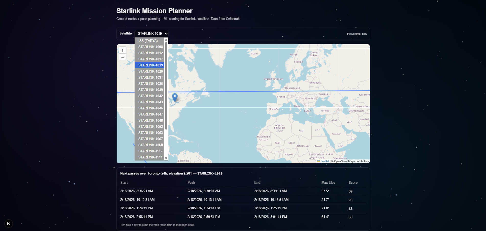

Incoming
Deloitte
Technology Intern
Joining the Technology team. I got a first look at the culture at Deloitte's Path to Purpose Student Summit in Toronto, where our team's city build won me a Green Dot Builder Award.
CS student at the University of Toronto applying machine learning to fintech and insurance. I build and test models that affect real financial outcomes, and I ship full stack AI products too.
Recognized for academic excellence at the University of Toronto.
GigIT won it at NewHacks 2025. We built it in 24 hours.
Designing and evaluating an AR intervention for emotional intelligence.
Picked for the ceremonial flag bearing team, and volunteered at every Toronto match.
An AI platform that helps freelancers get through financial approvals. Banks lean on W-2s that many gig workers do not have, so we read the documents they do have and turn them into a report a bank can review instantly.
Reshapes interfaces that already exist to match what a user says they need. The generated surface runs on a small Raspberry Pi device.
A fantasy baseball assistant for first time players. It turns complicated stats into clear suggestions and next step actions, built with the Focus in Technology Leadership program and BaiT Analytics.

A satellite mission planner that pulls public orbit data, tracks the ISS on a map and predicts when it passes over Toronto.
Joining the Technology team. I got a first look at the culture at Deloitte's Path to Purpose Student Summit in Toronto, where our team's city build won me a Green Dot Builder Award.
I worked on designing and evaluating an AR based intervention that trains emotional intelligence through immersive, scenario driven practice: recognizing emotions, regulating them and building empathy.
Built complete AI solutions across the full stack: LLM backends, APIs and production ready frontends. The work shipped as production AI applications, including claims and sovereign AI tools that serve clients across the country.
Research at the line between computer science and cognitive modeling. I build ML and LLM pipelines that analyze image aesthetics, design image presentation experiments, and model how visual features predict what people remember.
Contributing to MDN Web Docs. I improve WebSocket and JavaScript API examples and fix documentation accuracy so developers get code that works.
Co-developed Rostr, which turns complex stats into simple recommendations for beginner fantasy baseball managers. I worked across the whole build, from requirements to demo, partnered with BaiT to fit real startup constraints, and presented to a panel of industry leaders.
Represented UofT at campus-wide events, worked with large teams on logistics and helped create events from start to finish.
Marksmanship, drills, annual trips to Canadian Army bases, government-hosted volunteer events, and navigation and survival skills. It's where I learned what discipline and team pressure really feel like.
I'm a CS student at UofT who likes machine learning that touches real money and real decisions: risk and credit modeling, fraud detection and behavioral forecasting. I care about building models and testing them hard, from underwriting and pricing to real-time risk checks.
My research also goes into computational vision and aesthetics, especially personalized, context aware systems that adapt in real time. Before CS, I spent five years in the Royal Canadian Army Cadets, which taught me more about discipline and teamwork under pressure than anything else.
Away from the laptop I'm a big Real Madrid fan, and I got to walk out with the players at the 2026 World Cup here in Toronto. I'm always working on something.